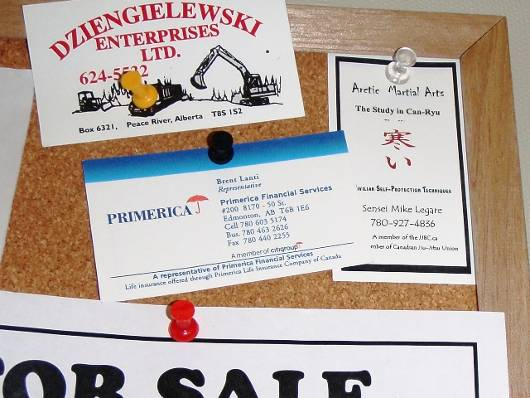
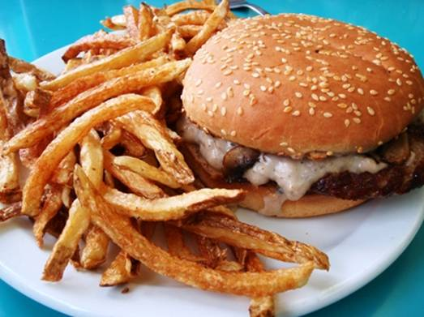
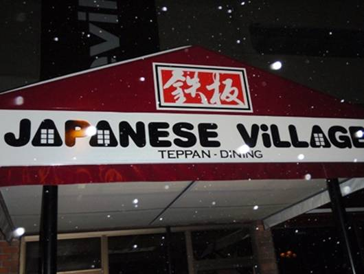
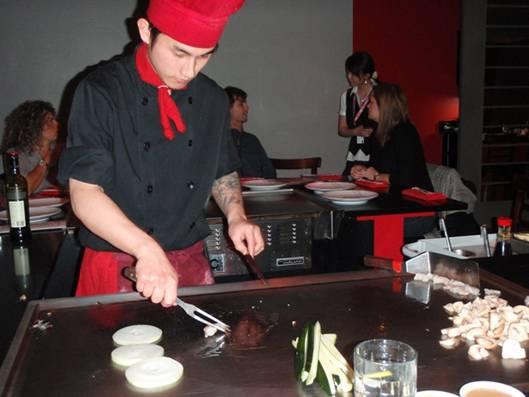
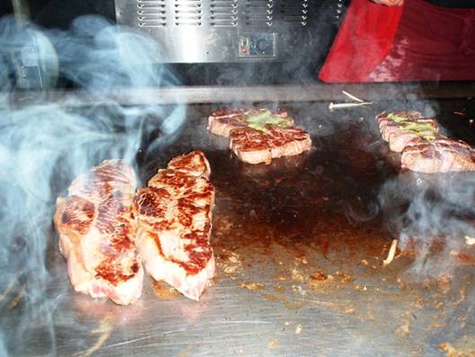
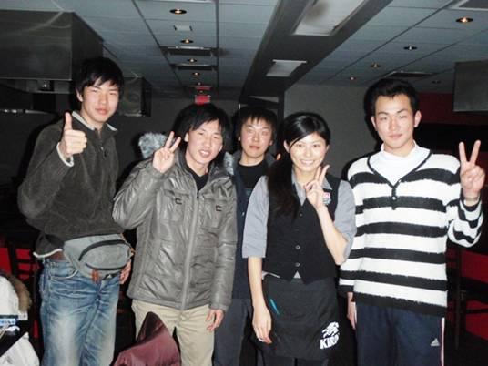

□13日目(2/24)Manning→Edmonton


小雪が降っているが、風や車の風圧で路面の粉雪は吹き飛ばされていく。安全運転でひたすら南下していく。大平原が続いたが、Peace River(ピース･リバー)の町のところで、川に沿った大きな谷を橋で渡った。

ピース･リバーはスルーして、14時過ぎにValleyview(バレービュー)という小さな町のSammy’sレストランに入った。7日目にグリムショウで食べたとこと同じチェーン店のようだ。ハンバーガーやサラダなどを食べたが、やはり食べたことがないようなオリジナルなメニューであって満足できた。写真はきのこのグラタンソースが入ったハンバーガ。

バレービューの町はハイウェイの合流点。ここからは43号線に乗って進む。このハイウェイがこれまでに通ってきた所と違う点が、ほぼ全線で分離帯があることだ。分離帯といっても日本のようなブロックが並んでいるようなものではなく、幅数十メートルの広い溝ができている。国土が広いカナダだからこそできることだろう。ちなみにこの広い分離帯がある区間では、110km/h制限になる。

エドモントンが近づいてくると、次第に大きな町を次々と通り過ぎるようになってくる。辺りはだいぶ暗くなってきて、夜の都会の明かりが目立つ様になってきた。ようやくエドモントンの市街に入った。街には碁盤の目ように南北に道路が走っている。小雪は降り続いており、メイン道路は除雪が完璧だが、細い路地などでは真っ白な路面になっている。街が広すぎて、細かい所まで除雪できないのだろう。信号などで止まるとき、除雪されていない所ではABSが作動することもあった。

ネットで探してあったDay’s Innという宿を見つけ、チェックインする。これまでの駐車場が広いモーテルと違い、屋上パーキングであった。しかし都会であっても1部屋110ドル(現在約8500円)の安さ！部屋は広くベッドもふかふか。ダブルベッドに二人が寝ることになるが、カナダでは4人で旅行するに限る。


今夜もメシ屋を探して街をさまよう。狙いは本場のアルバータ牛である。ホテルのロビーの人にステーキ店を聞いてみたものの、発見できない。小雪が降る中、さまよい続けると、一軒の店に引き寄せられた。”JapaneseVillage”。看板には、鉄板ダイニングと書いてある。入ってみると、なにやら暗い室内でパーティーのようなものがとり行われていた。一般のお客さんはいないようだ。入る店を間違えたか、と思ったが、奥から出てきたスタッフが出迎えてくれて、メニューを渡してくれた。メニューを見ると確かにステーキが！聞いてみたところ、アルバータ産の牛肉を使っているとのこと。早速注文することにした。

New York Steak (10oz：約280g)を2つと、Tenderloin
Steakを2つ注文。どちらもAAAのランクのついた最上級のアルバータ産牛肉だ。座ったテーブルの目の前には大きな鉄板がある。ここで、腕に刺青のあるシェフが鉄板の前に登場。最初に肉の焼き方について尋ねられた。僕たちが日本人だとわかると、日本人のスタッフを連れてきてくれ、説明をしてくれた。説明が終わると、まずスープとサラダにライスが出された。シェフは最初にナイフを両手に持ち、鉄板の上で打ち鳴らしたり、ジャグリングのように器用に舞わす高度なパフォーマンスを披露。そして、パフォーマンスは続けながら、華麗に、オニオン、ズッキーニ、マッシュルーム、エビを焼き始める。ナイフで切っていくのもパフォーマンス。いい感じに火が通ったら、4人の皿の上に盛り分けてくれる。エビがぷりぷりで最高にウマい。次に、大きなサーロイン(New York Steak)、テンダーロイン(Tenderloin Steak)を鉄板に乗せ焼き始めた。その間にシェフは、もやしも鉄板上でバターを使い、炒め始める。両手のナイフを器用に使い、鮮やかに炒めていく。もやしでハートマークも作ってみせた。肉のほうは表面にいい焼き色が付いてきた。ここでグリーンバターという緑色のバターを肉に乗せ、サイコロ状に斬っていく。ミディアムに焼きあがったステーキがお皿の上へやってきた。サーロインは口に入れると、コクのある脂がじゅわーっと広がり、とろけてしまうような味わい。テンダーロイン(ヒレ肉)は肉の繊維があっという間にほぐれてしまうほど非常にやわらかい。どちらも最高の一言に尽きる。しかも肉のタレがいい。自家製のゴマダレで、濃厚なコクが肉ととてもマッチする。タレをご飯の上にかけただけでもご飯がすすむ。コースの最後は、デザートのアイスクリームで締められた。肉はもちろん、その他の野菜やスープなども非常においしく、価格は4人で約$120+Tipだが、これほどボリューム満点のステーキコースとシェフのパフォーマンスが見られて、この値段はとってもお得だと思う。さらに食後には、先ほどの日本人女性スタッフの人と、これまでの旅についてなどの会話を楽しんだ。この方はカナダにワーキングホリデーで来ていると言っていた。偶然見つけたこのお店は、今合宿の中で間違いなくNo.1と言えるだろう。



